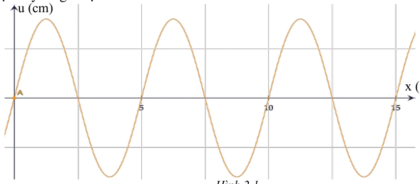
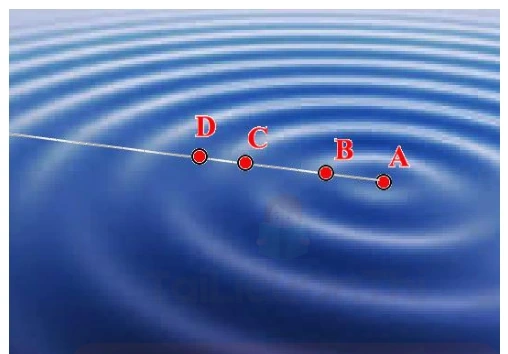
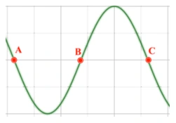
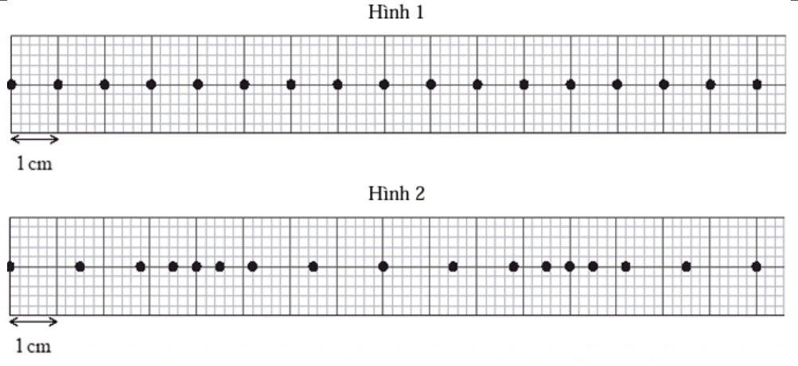
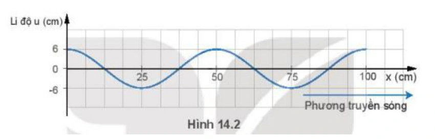
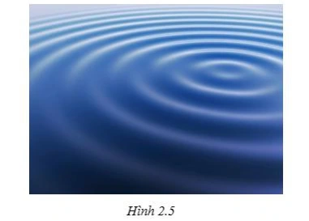
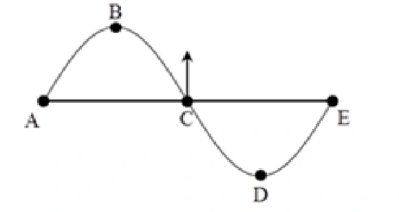

Bài tập — Bài 1 — Đại cương sóng cơ và sự truyền sóng
Hệ bài tập được biên soạn theo các dạng xuất hiện trong bộ tài liệu Vật lí 11 của dự án. Câu hỏi được giữ ngắn, trực tiếp; độ khó tăng dần và không cố tình thêm dữ kiện gây nhiễu.
Phần A — Trắc nghiệm 4 lựa chọn
Bài 1 — Mức 1 — Nhận biết
Một sóng cơ có tần số \(20\) Hz truyền với tốc độ \(4\) m/s. Bước sóng là
A. \(0,10\) m.
B. \(0,20\) m.
C. \(5\) m.
D. \(80\) m.
Đáp án và lời giải
Chọn B. \(\lambda=v/f=4/20=0,20\) m.
Bài 2 — Mức 1 — Nhận biết
Phát biểu đúng về sóng cơ là
A. Sóng cơ truyền được trong chân không.
B. Khi sóng truyền, các phần tử môi trường chuyển dời theo sóng từ nguồn đến rất xa.
C. Sóng cơ truyền dao động và năng lượng qua môi trường.
D. Tốc độ truyền sóng chỉ phụ thuộc tần số nguồn.
Đáp án và lời giải
Chọn C. Sóng cơ cần môi trường vật chất và truyền trạng thái dao động/năng lượng, không mang các phần tử môi trường đi theo.
Bài 3 — Mức 1 — Nhận biết
Một sóng có \(\lambda=40\) cm. Hai điểm gần nhau nhất trên cùng phương truyền sóng dao động cùng pha cách nhau
A. \(10\) cm.
B. \(20\) cm.
C. \(40\) cm.
D. \(80\) cm.
Đáp án và lời giải
Chọn C. Hai điểm gần nhất cùng pha trên phương truyền sóng cách nhau một bước sóng.
Phần B — Đúng/Sai
Bài 4 — Mức 2 — Thông hiểu
Xét một sóng cơ hình sin:
a) Chu kì dao động của phần tử môi trường bằng chu kì nguồn.
b) Bước sóng là quãng đường sóng truyền trong một chu kì.
c) Sóng ngang luôn truyền được trong chất khí.
d) Khi truyền sang môi trường khác, tần số do nguồn quyết định thường không đổi.
Đáp án và lời giải
a) Đúng. b) Đúng. c) Sai đối với sóng cơ trong khối môi trường thông thường; chất khí không truyền sóng cơ ngang thể tích. d) Đúng: tần số liên tục qua mặt phân cách, còn tốc độ và bước sóng có thể đổi.
Phần C — Trả lời ngắn
Bài 5 — Mức 3 — Vận dụng
Một nguồn dao động với tần số \(25\) Hz tạo sóng truyền với tốc độ \(5\) m/s. Tính bước sóng và thời gian sóng truyền đi \(3\) m.
Đáp án và lời giải
\(\lambda=v/f=5/25=0,20\) m. Thời gian truyền \(t=s/v=3/5=0,60\) s.
Bài 6 — Mức 3 — Vận dụng
Một sóng có bước sóng \(60\) cm. Tính khoảng cách ngắn nhất giữa hai điểm trên phương truyền sóng dao động ngược pha.
Đáp án và lời giải
Ngược pha khi \(\Delta d=(k+1/2)\lambda\). Khoảng cách nhỏ nhất ứng với \(k=0\): \(\lambda/2=30\) cm.
Bài 7 — Mức 3 — Vận dụng
Một sóng truyền qua điểm A rồi đến B cách A \(1,5\) m sau \(0,30\) s. Tần số nguồn là \(4\) Hz. Tính tốc độ và bước sóng.
Đáp án và lời giải
\(v=1,5/0,30=5\) m/s. \(\lambda=v/f=5/4=1,25\) m.
Phần D — Vận dụng và vận dụng cao
Bài 8 — Mức 4 — Vận dụng cao
Một sóng hình sin truyền trên dây với tốc độ \(2,4\) m/s. Hai điểm M, N trên cùng phương truyền cách nhau \(45\) cm dao động lệch pha \(3\pi/2\) rad theo độ lớn nhỏ nhất tương ứng với khoảng cách đó. Tính bước sóng và tần số.
Đáp án và lời giải
Độ lệch pha theo không gian: \(|\Delta\varphi|=2\pi d/\lambda\). Với \(d=0,45\) m và độ lệch pha đang xét là \(3\pi/2\):
\(2\pi\cdot0,45/\lambda=3\pi/2\).
Suy ra \(\lambda=0,60\) m. Tần số \(f=v/\lambda=2,4/0,60=4\) Hz.
Ngân hàng bài tập mở rộng
Nhận biết — Trả lời ngắn
Bài 9
Một nguồn sóng dao động điều hòa thực hiện 15 dao động trong thời gian 20 giây. Tốc độ truyền sóng \(v=5\,\mathrm{m/s}\). Bước sóng của sóng này có giá trị bao nhiêu? (Làm tròn đến chữ số thập phân thứ 2 sau dấu phẩy)
Đáp án và lời giải
Đáp án: \(6{,}67\) Hướng dẫn giải:
Chu kì dao động của nguồn là \(T=\dfrac{t}{N}=\dfrac{20}{15}\,\mathrm{s}\).
Bước sóng:
\(\lambda=vT=5\cdot\dfrac{20}{15}\approx6{,}67\,\mathrm{m}\).
Vậy kết quả cần tìm là \(6{,}67\).
Bài 10
Một sóng cơ truyền dọc theo trục Ox có phương trình \(u=5\cos(6\pi t-\pi x)\) (cm), với \(t\) đo bằng s, \(x\) đo bằng m. Khoảng cách giữa 3 gợn sóng liên tiếp trên phương truyền sóng cách nhau một khoảng bao nhiêu (tính theo đơn vị mét)?
Đáp án và lời giải
Đáp án: \(4\,\mathrm{m}\).
Hướng dẫn giải: Từ \(u=5\cos(6\pi t-\pi x)\) suy ra số sóng \(k=\pi\,\mathrm{rad/m}\), do đó \(\lambda=\dfrac{2\pi}{k}=2\,\mathrm{m}\). Ba gợn sóng liên tiếp gồm hai khoảng bước sóng, nên khoảng cách từ gợn thứ nhất đến gợn thứ ba là \(2\lambda=4\,\mathrm{m}\).
Đối chiếu nguồn
PDF nguồn cho kết quả \(12\,\mathrm{m}\); kết quả này không phù hợp với \(k=\pi\,\mathrm{rad/m}\). Tính độc lập từ phương trình sóng cho \(4\,\mathrm{m}\).
Bài 11
Hai điểm M, N lần lượt cùng nằm trên một phương truyền sóng và cách nhau một phần ba bước sóng. Biên độ sóng không đổi trong quá trình truyền sóng. Tại một thời điểm, khi li độ dao động của một phần tử M là 3 cm thì li của của phần tử tại N là - 3 cm. Tính biên độ sóng? (tính theo đơn vị cm và là tròn đến số thập phân thứ hai)
Đáp án và lời giải
Đáp án: \(3{,}46\) Hướng dẫn giải:
Dùng quan hệ \(v=\lambda f=\lambda/T\); khi đọc đồ thị phải xác định đúng chu kì theo thời gian và bước sóng theo không gian.
Độ lệch pha giữa M và N: Dùng đường tròn lượng giác ( hình 3.7 ) biểu diễn độ lệch pha suy ra:
Vậy kết quả cần tìm là \(3{,}46\).
Bài 12
Một nguồn phát sóng trên mặt nước tạo dao động với tần số 100 Hz gây ra các sóng tròn lan rộng trên mặt nước. Biết khoảng cách giữa 7 gợn lồi liên tiếp là 3 cm. Tốc độ truyền sóng trên mặt nước là bao nhiêu (tính theo đơn vị m/s)?
Đáp án và lời giải
Đáp án: \(0{,}5\,\mathrm{m/s}\).
Hướng dẫn giải: Khoảng cách giữa 7 gợn lồi liên tiếp chứa 6 bước sóng: \(6\lambda=3\,\mathrm{cm}\Rightarrow\lambda=0{,}5\,\mathrm{cm}=5\times10^{-3}\,\mathrm{m}\). Vì \(f=100\,\mathrm{Hz}\), \(v=\lambda f=5\times10^{-3}\cdot100=0{,}5\,\mathrm{m/s}\).
Đối chiếu nguồn
PDF nguồn ghi đúng dữ kiện \(3\,\mathrm{cm}\) nhưng lời giải đổi sai thành \(\lambda=0{,}5\,\mathrm{m}\) và kết luận \(50\,\mathrm{m/s}\). Giữ nguyên dữ kiện đề và sửa kết quả theo phép tính đúng.
Bài 13
Tại điểm O trong lòng đất đang xảy ra dư chấn của một trận động đất. Ở điểm A trên mặt đất có một trạm quan sát địa chấn. Tại thời điểm nào đó, một rung chuyển ở O tạo ra hai sóng cơ (một sóng dọc, một sóng ngang) truyền thẳng đến A và tới A ở hai thời điểm cách nhau 15 s. Biết tốc độ truyền sóng dọc và tốc độ
truyền sóng ngang lần lượt là 8000 m/s và 5000 m/s. Khoảng cách từ O đến A là bao nhiêu (tính theo đơn vị km)?
Đáp án và lời giải
Đáp án: \(200\) Hướng dẫn giải:
Dùng quan hệ \(v=\lambda f=\lambda/T\); khi đọc đồ thị phải xác định đúng chu kì theo thời gian và bước sóng theo không gian.
Gọi s là khoảng cách từ tâm chấn động đất đến trạm quan trắc. Khoảng thời gian chênh lệch trạm quan trắc nhận được hai tín hiệu
Vậy kết quả cần tìm là \(200\).
Bài 14
Một sóng ngang cơ học truyền trên một sợi dây đàn hồi với biên độ bằng 4 cm không đổi. Biết tần số và tốc độ truyền sóng lần lượt là 4 Hz và 60 cm/s. Nếu khoảng cách gần nhất giữa hai điểm trên dây là 35 cm thì khoảng cách xa nhất giữa chúng là bao nhiêu (tính theo đơn vị cm, làm tròn đến một chữ số thập phân sau dấu phẩy)?
Đáp án và lời giải
Đáp án: \(35{,}7\) Hướng dẫn giải:
\(\lambda=\dfrac{v}{f}=\dfrac{60}{4}=15\,\mathrm{cm}\). Vì \(d_{\min}=35\,\mathrm{cm}=2\lambda+\lambda/3\), hai điểm dao động lệch pha \(\Delta\varphi=2\pi/3\).
Khoảng cách lớn nhất giữa hai phần tử là
\(d_{\max}=\sqrt{(\Delta x)^2+2a^2(1-\cos\Delta\varphi)}=\sqrt{35^2+2\cdot4^2\left(1-\cos\dfrac{2\pi}{3}\right)}\approx35{,}7\,\mathrm{cm}\).
Vậy kết quả cần tìm là \(35{,}7\).
Bài 15
Sóng ngang truyền trên mặt chất lỏng với biên độ không đổi và tần số 10 Hz. Trên cùng phương truyền sóng, ta thấy có hai điểm M và N mà khoảng cách của chúng luôn không đổi là 12 cm. Biết tốc độ có giá trị trong khoảng 50 cm/s đến 70 cm/s. Giá trị của tốc độ sóng là bao nhiêu (tính theo đơn vị m/s)?
Đáp án và lời giải
Đáp án: \(0{,}6\) Hướng dẫn giải:
Dùng quan hệ \(v=\lambda f=\lambda/T\); khi đọc đồ thị phải xác định đúng chu kì theo thời gian và bước sóng theo không gian.
Vậy kết quả cần tìm là \(0{,}6\).
Bài 16
Một sóng dọc truyền trong môi trường với bước sóng 15 cm, biên độ không đổi \(5\sqrt{3}\) cm. Gọi P và Q là hai điểm cùng nằm trên một phương truyền sóng. Khi chưa có sóng truyền đến hai điểm P và Q nằm cách nguồn các khoảng lần lượt là 20 cm và 30 cm. Khoảng cách xa nhất giữa hai phần tử môi trường tại P và Q khi có sóng truyền qua là bao nhiêu (tính theo đơn vị m)?
Đáp án và lời giải
Đáp án: \(0{,}25\) Hướng dẫn giải:
Phương trình dao động của P và Q lần lượt là
\(u_P=5\sqrt3\cos\left(\omega t-\dfrac{2\pi\cdot20}{15}\right)=5\sqrt3\cos\left(\omega t-\dfrac{8\pi}{3}\right)\),
\(u_Q=5\sqrt3\cos\left(\omega t-\dfrac{2\pi\cdot30}{15}\right)=5\sqrt3\cos(\omega t-4\pi)\).
Suy ra \(\Delta u=u_Q-u_P=15\cos\left(\omega t-\dfrac{\pi}{6}\right)\), nên \(\Delta u_{\max}=15\,\mathrm{cm}\).
\(d_{\max}=\Delta x+\Delta u_{\max}=10+15=25\,\mathrm{cm}=0{,}25\,\mathrm{m}\).
Vậy kết quả cần tìm là \(0{,}25\).
Bài 17
Tính bước sóng của sóng? (tính theo mm)
Đáp án và lời giải
Đáp án: 8 Hướng dẫn giải:
Dùng quan hệ \(v=\lambda f=\lambda/T\); khi đọc đồ thị phải xác định đúng chu kì theo thời gian và bước sóng theo không gian.
Vậy kết quả cần tìm là 8.
Bài 18
Tốc độ sóng trên mặt nước là bao nhiêu? (tính theo m/s)
Đáp án và lời giải
Đáp án: \(0{,}8\) Hướng dẫn giải:
Dùng quan hệ \(v=\lambda f=\lambda/T\); khi đọc đồ thị phải xác định đúng chu kì theo thời gian và bước sóng theo không gian.
Vậy kết quả cần tìm là \(0{,}8\).
Bài 19
Bước sóng là bao nhiêu? (tính theo cm)
Đáp án và lời giải
Đáp án: 4 Hướng dẫn giải:
Dùng quan hệ \(v=\lambda f=\lambda/T\); khi đọc đồ thị phải xác định đúng chu kì theo thời gian và bước sóng theo không gian.
Vậy kết quả cần tìm là 4.
Bài 20
Tính khoảng cách AB? (tính theo mét)
Đáp án và lời giải
Đáp án: \(0{,}08\) Hướng dẫn giải:
Dùng quan hệ \(v=\lambda f=\lambda/T\); khi đọc đồ thị phải xác định đúng chu kì theo thời gian và bước sóng theo không gian.
Vậy kết quả cần tìm là \(0{,}08\).
Bài 21
Bước sóng của ánh sáng đơn sắc là bao nhiêu ? (tính theo \(\mu\mathrm{m}\) )
Đáp án và lời giải
Đáp án: \(0{,}75\) Hướng dẫn giải:
Dùng quan hệ \(v=\lambda f=\lambda/T\); khi đọc đồ thị phải xác định đúng chu kì theo thời gian và bước sóng theo không gian.
Vậy kết quả cần tìm là \(0{,}75\).
Bài 22
Bước sóng là bao nhiêu? (tính theo m)
Đáp án và lời giải
Đáp án: \(0{,}5\) Hướng dẫn giải:
Dùng quan hệ \(v=\lambda f=\lambda/T\); khi đọc đồ thị phải xác định đúng chu kì theo thời gian và bước sóng theo không gian.
Vậy kết quả cần tìm là \(0{,}5\).
Bài 23
Tốc độ sóng trên dây bằng bao nhiêu? (tính theo mét/giây)
Đáp án và lời giải
Đáp án: \(50\) Hướng dẫn giải:
Dùng quan hệ \(v=\lambda f=\lambda/T\); khi đọc đồ thị phải xác định đúng chu kì theo thời gian và bước sóng theo không gian.
Vậy kết quả cần tìm là \(50\).
Bài 24
Xác định bước sóng \(\lambda\)? (tính theo mét)
Đáp án và lời giải
Đáp án: \(0{,}2\) Hướng dẫn giải:
Dùng quan hệ \(v=\lambda f=\lambda/T\); khi đọc đồ thị phải xác định đúng chu kì theo thời gian và bước sóng theo không gian.
Vậy kết quả cần tìm là \(0{,}2\).
Bài 25
Tốc độ truyền sóng trên mặt nước bằng bao nhiêu? (tính theo mét/giây)
Đáp án và lời giải
Đáp án: \(0{,}4\) Hướng dẫn giải:
Dùng quan hệ \(v=\lambda f=\lambda/T\); khi đọc đồ thị phải xác định đúng chu kì theo thời gian và bước sóng theo không gian.
Vậy kết quả cần tìm là \(0{,}4\).
Bài 26
Số điểm có biên độ dao động đứng yên là bao nhiêu?
Đáp án và lời giải
Đáp án: 6 Hướng dẫn giải:
Dùng quan hệ \(v=\lambda f=\lambda/T\); khi đọc đồ thị phải xác định đúng chu kì theo thời gian và bước sóng theo không gian.
Vậy kết quả cần tìm là 6.
Nhận biết — Trắc nghiệm 4 lựa chọn
Bài 27
Một nguồn sóng cơ học thực hiện dao động điều hoà, trong thời gian 60 s nguồn sóng thực hiện được 30 dao động toàn phần. Sóng cơ do nguồn này tạo ra có chu kỳ
A. 60 s.
B. 0,5 s.
C. 2 s.
D. 30 s.
Đáp án và lời giải
Đáp án: C Hướng dẫn giải:
Dùng quan hệ \(v=\lambda f=\lambda/T\); khi đọc đồ thị phải xác định đúng chu kì theo thời gian và bước sóng theo không gian.
Đối chiếu kết quả với các lựa chọn, phương án phù hợp là C. 2 s.
Bài 28
Gọi \(v\) là tốc độ truyền sóng, \(T\) là chu kỳ sóng, \(f\) là tần số sóng và \(\lambda\) là bước sóng. Công thức nào sau đây sai?
A. \(\lambda=\dfrac{v}{f}\).
B. \(f=\dfrac{\lambda}{v}\).
C. \(T=\dfrac{\lambda}{v}\).
D. \(f=\dfrac{1}{T}\).
Đáp án và lời giải
Đáp án: B Hướng dẫn giải:
Dùng quan hệ \(v=\lambda f=\lambda/T\); khi đọc đồ thị phải xác định đúng chu kì theo thời gian và bước sóng theo không gian.
Đối chiếu kết quả với các lựa chọn, phương án phù hợp là B. \(f=\dfrac{\lambda}{v}\).
Bài 29
Trong cùng một môi trường truyền sóng cơ học, tốc độ truyền sóng
A. càng lớn nếu tần số của sóng càng lớn.
B. càng lớn nếu tần số của sóng càng nhỏ.
C. càng lớn nếu tần số góc của sóng càng nhỏ.
D. có giá trị như nhau với mọi tần số.
Đáp án và lời giải
Đáp án: D Hướng dẫn giải:
Dùng quan hệ \(v=\lambda f=\lambda/T\); khi đọc đồ thị phải xác định đúng chu kì theo thời gian và bước sóng theo không gian.
Đối chiếu kết quả với các lựa chọn, phương án phù hợp là D. có giá trị như nhau với mọi tần số.
Bài 30
Tốc độ truyền sóng phụ thuộc vào
A. chu kỳ sóng.
B. môi trường truyền sóng.
C. tần số sóng.
D. biên độ sóng.
Đáp án và lời giải
Đáp án: B Hướng dẫn giải:
Dùng quan hệ \(v=\lambda f=\lambda/T\); khi đọc đồ thị phải xác định đúng chu kì theo thời gian và bước sóng theo không gian.
Đối chiếu kết quả với các lựa chọn, phương án phù hợp là B. môi trường truyền sóng.
Bài 31
Trong cùng một môi trường truyền sóng, bước sóng sẽ giảm nếu:
A. tăng chu kỳ sóng.
B. tăng biên độ sóng.
C. tăng tần số sóng.
D. tăng li độ sóng.
Đáp án và lời giải
Đáp án: C Hướng dẫn giải:
Dùng quan hệ \(v=\lambda f=\lambda/T\); khi đọc đồ thị phải xác định đúng chu kì theo thời gian và bước sóng theo không gian.
Đối chiếu kết quả với các lựa chọn, phương án phù hợp là C. tăng tần số sóng.
Bài 32
Sóng cơ học không truyền được trong môi trường
A. không khí.
B. thép.
C. dầu hoả.
D. chân không.
Đáp án và lời giải
Đáp án: D Hướng dẫn giải:
Dùng quan hệ \(v=\lambda f=\lambda/T\); khi đọc đồ thị phải xác định đúng chu kì theo thời gian và bước sóng theo không gian.
Đối chiếu kết quả với các lựa chọn, phương án phù hợp là D. chân không.
Bài 33
Một nguồn sóng có tần số 20 Hz, tạo ra sóng trên mặt nước. Biết sóng truyền đi với tốc độ \(0{,}4\,\mathrm{m/s}\). Bước sóng được tạo ra trên mặt nước có giá trị
A. \(\lambda=2\) cm.
B. \(\lambda=8\) m.
C. \(\lambda=50\) m.
D. \(\lambda=8\) cm.
Đáp án và lời giải
Đáp án: A Hướng dẫn giải:
Dùng quan hệ \(v=\lambda f=\lambda/T\); khi đọc đồ thị phải xác định đúng chu kì theo thời gian và bước sóng theo không gian.
Đối chiếu kết quả với các lựa chọn, phương án phù hợp là A. \(\lambda=2\) cm.
Bài 34
Sóng cơ học không truyền được trong môi trường
A. không khí.
B. chân không.
C. chất lỏng.
D. chất rắn.
Đáp án và lời giải
Đáp án: B Hướng dẫn giải:
Dùng quan hệ \(v=\lambda f=\lambda/T\); khi đọc đồ thị phải xác định đúng chu kì theo thời gian và bước sóng theo không gian.
Đối chiếu kết quả với các lựa chọn, phương án phù hợp là B. chân không.
Bài 35
Một sóng cơ học lan truyền trên một sợi dây đàn hồi có hình dạng như hình 2.1 Bước sóng của sóng cơ học này có giá trị

A. 2,5 m.
B. 10 m.
C. 5 m.
D. 15 m.
Đáp án và lời giải
Đáp án: C. \(5\,\mathrm{m}\).
Hướng dẫn giải: Bước sóng là khoảng cách giữa hai điểm gần nhau nhất dao động cùng pha. Đọc trực tiếp trục \(x\) của Hình 2.1, hai đỉnh liên tiếp cách nhau \(5\,\mathrm{m}\), nên \(\lambda=5\,\mathrm{m}\).
Đối chiếu nguồn
PDF nguồn tô phương án A (\(2{,}5\,\mathrm{m}\)), nhưng khoảng cách đỉnh-đỉnh trên chính đồ thị là \(5\,\mathrm{m}\).
Bài 36
Một sóng truyền trên mặt chất lỏng với tần số 10 Hz. Biết khoảng cách giữa 5 gợn sóng liên tiếp là 1,6 m. Tốc độ truyền sóng trên mặt nước là
A. 0,4 m/s
B. 8 m/s
C. 1,6 m/s
D. 4 m/s.
Đáp án và lời giải
Đáp án: D. \(4\,\mathrm{m/s}\).
Hướng dẫn giải: Năm gợn sóng liên tiếp tạo bốn khoảng bước sóng: \(4\lambda=1{,}6\,\mathrm{m}\Rightarrow\lambda=0{,}4\,\mathrm{m}\). Suy ra \(v=\lambda f=0{,}4\cdot10=4\,\mathrm{m/s}\).
Đối chiếu nguồn
Dòng đề trong PDF in “16 m”, trong khi các phương án và chính hướng dẫn của PDF dùng \(1{,}6\,\mathrm{m}\). Dữ kiện được hiệu chỉnh tối thiểu thành \(1{,}6\,\mathrm{m}\) để khớp nhất quán với bài gốc.
Bài 37
Một sóng có tần số 50 Hz trên trong một môi trường với vận tốc 340 m/s. Bước sóng của nó là
A. 1,7 m.
B. 3,4 m.
C. 6,8 m.
D. 13,6 m.
Đáp án và lời giải
Đáp án: C Hướng dẫn giải: Tần số \(f=50\,\mathrm{Hz}\), tốc độ truyền sóng \(v=340\,\mathrm{m/s}\). Áp dụng \(\lambda=\dfrac{v}{f}\): \(\lambda=\dfrac{340}{50}=6{,}8\,\mathrm{m}\).
Bài 38
Cường độ sóng được xác định bằng
A. Công suất của sóng truyền qua một đơn vị diện tích vuông góc với phương truyền sóng.
B. Năng lượng sóng truyền qua một đơn vị diện tích vuông góc với phương truyền sóng.
C. Năng lượng sóng truyền qua diện tích S vuông góc với phương truyền sóng, trong một
đơn vị thời gian.
D. Năng lượng sóng truyền qua diện tích S vuông góc với phương truyền sóng trong khoảng thời gian t.
Đáp án và lời giải
Đáp án: A Hướng dẫn giải:
Dùng quan hệ \(v=\lambda f=\lambda/T\); khi đọc đồ thị phải xác định đúng chu kì theo thời gian và bước sóng theo không gian.
Đối chiếu kết quả với các lựa chọn, phương án phù hợp là A. Công suất của sóng truyền qua một đơn vị diện tích vuông góc với phương truyền sóng.
Bài 39
Hình 2.4 bên mô tả quá trình sóng lan truyền trên bề mặt nước. Bước sóng là khoảng cách giữa hai điểm

A. AB.
B. BC.
C. CD.
D. AC.
Đáp án và lời giải
Đáp án: B.
Hướng dẫn giải:
Bước sóng là khoảng cách giữa hai điểm gần nhau nhất dao động cùng pha trên phương truyền sóng. Trên hình, \(B\) và \(C\) là hai đỉnh sóng liên tiếp, nên \(BC=\lambda\).
Bài 40
Một nguồn sóng dao động điều hòa. Khoảng thời gian giữa 9 lần liên tiếp ngọn sóng tại nhô lên cao là 3,2 giây. Biết sóng truyền từ nguồn sóng cách bờ 5 m đến khi vào tới bờ mất 4 giây. Bước sóng của sóng này có giá trị
A. 0,25 m.
B. 0,5 m.
C. 0,125 m.
D. 2,5 m.
Đáp án và lời giải
Đáp án: B Hướng dẫn giải: Chín lần ngọn sóng nhô cao liên tiếp tương ứng với \(8\) chu kì, nên \(T=\dfrac{3{,}2}{8}=0{,}4\,\mathrm{s}\). Tốc độ truyền sóng \(v=\dfrac{5}{4}=1{,}25\,\mathrm{m/s}\). Bước sóng \(\lambda=vT=1{,}25\cdot0{,}4=0{,}5\,\mathrm{m}\).
Đối chiếu kết quả với các lựa chọn, phương án phù hợp là B. 0,5 m.
Bài 41
Một nguồn sóng dao động điều hòa theo phương trình
Biết tốc độ truyền sóng trong môi trường là \(2\) m/s. Bước sóng do nguồn này tạo ra là
A. \(5\) m.
B. \(10\) m.
C. \(2{,}5\) m.
D. \(4\) m.
Đáp án và lời giải
Đáp án: B. Hướng dẫn giải:
\(\omega=\dfrac{2\pi}{5}\) rad/s nên \(T=\dfrac{2\pi}{\omega}=5\) s. Do đó
\(\lambda=vT=2\cdot5=10\ \text{m}.\)
Bài 42
Một sóng cơ truyền từ không khí vào môi trường nước sau đó đi vào thủy tinh. Tốc độ của sóng cơ truyền trong các môi trường nước \(v_{nc}\), không khí \(v_{kk}\) và thủy tinh \(v_{tt}\) được sắp xếp theo thứ tự tăng dần là
A. \(v_{nc},v_{kk},v_{tt}\).
B. \(v_{nc},v_{tt},v_{kk}\).
C. \(v_{nc}=v_{kk}=v_{tt}\).
D. \(v_{kk},v_{nc},v_{tt}\).
Đáp án và lời giải
Đáp án: D Hướng dẫn giải:
Dùng quan hệ \(v=\lambda f=\lambda/T\); khi đọc đồ thị phải xác định đúng chu kì theo thời gian và bước sóng theo không gian.
Đối chiếu kết quả với các lựa chọn, phương án phù hợp là D. \(v_{kk},v_{nc},v_{tt}\).
Bài 43
Đơn vị nào sau đây không là đơn vị cường độ sóng?
A. \(\mathrm{J/m^2}\).
B. \(\mathrm{W/m^2}\).
C. \(\mathrm{J/(s\,m^2)}\).
D. \(\mathrm{N/(s\,m)}\).
Đáp án và lời giải
Đáp án: A Hướng dẫn giải:
Dùng quan hệ \(v=\lambda f=\lambda/T\); khi đọc đồ thị phải xác định đúng chu kì theo thời gian và bước sóng theo không gian.
Đối chiếu kết quả với các lựa chọn, phương án phù hợp là A. \(\mathrm{J/m^2}\).
Bài 44
Trong quá trình truyền sóng đại lượng không được truyền đi là
A. năng lượng.
B. xung lượng.
C. biến dạng đàn hồi.
D. các phần tử vật chất.
Đáp án và lời giải
Đáp án: D Hướng dẫn giải:
Dùng quan hệ \(v=\lambda f=\lambda/T\); khi đọc đồ thị phải xác định đúng chu kì theo thời gian và bước sóng theo không gian.
Đối chiếu kết quả với các lựa chọn, phương án phù hợp là D. các phần tử vật chất.
Bài 45
Một nguồn sóng dao động điều hòa theo phương trình \(u=2\cos(5\pi t)\). Sóng do nguồn này tạo ra có tần số
A. 5 Hz.
B. 2,5 Hz.
C. 10 Hz.
D. 15,7 Hz.
Đáp án và lời giải
Đáp án: B Hướng dẫn giải: Từ \(u=2\cos(5\pi t)\) suy ra \(\omega=5\pi\,\mathrm{rad/s}\). Do đó \(f=\dfrac{\omega}{2\pi}=\dfrac{5\pi}{2\pi}=2{,}5\,\mathrm{Hz}\).
Bài 46
Công thức nào sau đây tính bước sóng là sai?
A. \(\lambda=vf\).
B. \(\lambda=vT\).
C. \(\lambda=\dfrac{v}{f}\).
D. \(\lambda=\dfrac{2\pi v}{\omega}\).
Đáp án và lời giải
Đáp án: A Hướng dẫn giải:
Dùng quan hệ \(v=\lambda f=\lambda/T\); khi đọc đồ thị phải xác định đúng chu kì theo thời gian và bước sóng theo không gian.
Đối chiếu kết quả với các lựa chọn, phương án phù hợp là A. \(\lambda=vf\).
Bài 47
Một sóng hình sin truyền theo chiều dương của trục \(Ox\), với phương trình dao động của nguồn tại \(O\) là
Tại điểm \(M\) theo hướng \(Ox\), cách \(O\) một phần ba bước sóng, phần tử môi trường dao động với phương trình nào?
A. \(u_M=2\cos\left(20\pi t+\dfrac{2\pi}{3}\right)\) cm.
B. \(u_M=2\cos\left(10\pi t+\dfrac{2\pi}{3}\right)\) cm.
C. \(u_M=2\cos\left(10\pi t-\dfrac{2\pi}{3}\right)\) cm.
D. \(u_M=2\cos\left(20\pi t-\dfrac{2\pi}{3}\right)\) cm.
Đáp án và lời giải
Đáp án: D. Hướng dẫn giải:
Sóng truyền theo chiều dương nên điểm \(M\) trễ pha so với nguồn một lượng
\(\displaystyle \Delta\varphi=\frac{2\pi x}{\lambda}=\frac{2\pi}{3}.\)
Do đó
\(u_M=2\cos\left(20\pi t-\frac{2\pi}{3}\right)\ \text{cm}.\)
Bài 48
Một người ngồi bên bờ biển thấy trong khoảng thời gian 9 giây có 19 ngọn sóng truyền qua trước mặt. Biết khoảng cách giữa hai ngọn sóng liên tiếp là 3m. Trong thời gian 5 s sóng truyền được quãng đường là
A. 20 m.
B. 30 m.
C. 15 m.
D. 25 m.
Đáp án và lời giải
Đáp án: B Hướng dẫn giải: Chu kì \(T=\dfrac{9}{19-1}=0{,}5\,\mathrm{s}\). Khoảng cách giữa hai ngọn sóng liên tiếp là một bước sóng, nên \(\lambda=3\,\mathrm{m}\). Suy ra \(v=\dfrac{\lambda}{T}=\dfrac{3}{0{,}5}=6\,\mathrm{m/s}\). Trong \(5\,\mathrm{s}\), sóng truyền được \(s=vt=6\cdot5=30\,\mathrm{m}\).
Đối chiếu kết quả với các lựa chọn, phương án phù hợp là B. 30 m.
Bài 49
Hai điểm A và C trong hình 3.1 cách nhau một bước sóng do

A. phần tử tại A và C cùng trạng thái.
B. phần tử tại A và C cùng vị trí.
C. phần tử tại A và C cùng vị tốc độ.
D. phần tử tại A và C cùng vị gia tốc.
Đáp án và lời giải
Đáp án: A Hướng dẫn giải:
Dùng quan hệ \(v=\lambda f=\lambda/T\); khi đọc đồ thị phải xác định đúng chu kì theo thời gian và bước sóng theo không gian.
Đối chiếu kết quả với các lựa chọn, phương án phù hợp là A. phần tử tại A và C cùng trạng thái.
Bài 50
Để phân loại sóng dọc và sóng ngang người ta dựa vào
A. tốc độ truyền sóng và bước sóng.
B. phương truyền sóng và tần số sóng.
C. phương dao động và phương truyền sóng.
D. phương dao động và tốc độ truyền sóng.
Đáp án và lời giải
Đáp án: C Hướng dẫn giải:
Dùng quan hệ \(v=\lambda f=\lambda/T\); khi đọc đồ thị phải xác định đúng chu kì theo thời gian và bước sóng theo không gian.
Đối chiếu kết quả với các lựa chọn, phương án phù hợp là C. phương dao động và phương truyền sóng.
Bài 51
Sóng dọc là sóng có phương dao động
A. trùng với phương truyền sóng.
B. nằm ngang.
C. vuông góc với phương truyền sóng.
D. thẳng đứng.
Đáp án và lời giải
Đáp án: A Hướng dẫn giải:
Dùng quan hệ \(v=\lambda f=\lambda/T\); khi đọc đồ thị phải xác định đúng chu kì theo thời gian và bước sóng theo không gian.
Đối chiếu kết quả với các lựa chọn, phương án phù hợp là A. trùng với phương truyền sóng.
Bài 52
Sóng ngang là sóng có phương dao động của các phần tử môi trường và phương truyền sóng hợp với nhau một góc
A. 30o
B. 60o.
C. 90o.
D. 0o.
Đáp án và lời giải
Đáp án: C Hướng dẫn giải:
Dùng quan hệ \(v=\lambda f=\lambda/T\); khi đọc đồ thị phải xác định đúng chu kì theo thời gian và bước sóng theo không gian.
Đối chiếu kết quả với các lựa chọn, phương án phù hợp là C. 90o.
Bài 53
Trong sự truyền sóng cơ, biên độ dao động của các phần tử môi trường có sóng truyền qua được gọi là
A. chu kì của sóng.
B. biên độ của sóng.
C. tốc độ truyền sóng.
D. năng lượng sóng.
Đáp án và lời giải
Đáp án: B Hướng dẫn giải:
Dùng quan hệ \(v=\lambda f=\lambda/T\); khi đọc đồ thị phải xác định đúng chu kì theo thời gian và bước sóng theo không gian.
Đối chiếu kết quả với các lựa chọn, phương án phù hợp là B. biên độ của sóng.
Bài 54
Sóng ngang (sóng cơ học) truyền được trong các môi trường
A. chất rắn và trong lòng chất lỏng.
B. chất khí và trong lòng chất rắn.
C. chất rắn và bề mặt chất lỏng.
D. chất khí và bề mặt chất rắn.
Đáp án và lời giải
Đáp án: C Hướng dẫn giải:
Dùng quan hệ \(v=\lambda f=\lambda/T\); khi đọc đồ thị phải xác định đúng chu kì theo thời gian và bước sóng theo không gian.
Đối chiếu kết quả với các lựa chọn, phương án phù hợp là C. chất rắn và bề mặt chất lỏng.
Bài 55
Đối với sóng cơ học, sóng dọc truyền được trong các môi trường
A. rắn, lỏng, chân không.
B. rắn, lỏng, khí.
C. rắn, khí, chân không.
D. lỏng, khí, chân không.
Đáp án và lời giải
Đáp án: B Hướng dẫn giải:
Dùng quan hệ \(v=\lambda f=\lambda/T\); khi đọc đồ thị phải xác định đúng chu kì theo thời gian và bước sóng theo không gian.
Đối chiếu kết quả với các lựa chọn, phương án phù hợp là B. rắn, lỏng, khí.
Bài 56
Chọn phát biểu sai.
A. Sóng dọc là sóng mà phương dao động của các phần tử vật chất nơi sóng truyền qua trùng với phương truyền sóng.
B. Sóng cơ không truyền được trong chân không.
C. Sóng ngang là sóng mà phương dao động của các phần tử vật chất nơi sóng truyền qua vuông góc với phương truyền sóng.
D. Khi sóng truyền đi, các phần tử vật chất nơi sóng truyền qua cùng truyền đi theo sóng.
Đáp án và lời giải
Đáp án: D Hướng dẫn giải:
Dùng quan hệ \(v=\lambda f=\lambda/T\); khi đọc đồ thị phải xác định đúng chu kì theo thời gian và bước sóng theo không gian.
Đối chiếu kết quả với các lựa chọn, phương án phù hợp là D. Khi sóng truyền đi, các phần tử vật chất nơi sóng truyền qua cùng truyền đi theo sóng.
Bài 57
Một sóng ngang tần số 50 Hz truyền theo phương nằm ngang với tốc độ truyền sóng là 4 m/s. Bước sóng của sóng trên là
A. 4 cm.
B. 12,5 cm.
C. 8 cm.
D. 200 cm.
Đáp án và lời giải
Đáp án: C Hướng dẫn giải:
Dùng quan hệ \(v=\lambda f=\lambda/T\); khi đọc đồ thị phải xác định đúng chu kì theo thời gian và bước sóng theo không gian.
Đối chiếu kết quả với các lựa chọn, phương án phù hợp là C. 8 cm.
Bài 58
Một người quan sát mặt biển thấy có 5 ngọn sóng đi qua trước mặt mình trong khoảng 10 s và đo được khoảng cách giữa 2 ngọn sóng liên tiếp là 5 m. Xem sóng biển là sóng ngang. Tốc độ truyền sóng là
A. 2 m/s.
B. 4 m/s.
C. 6 m/s.
D. 8 m/s.
Đáp án và lời giải
Đáp án: A Hướng dẫn giải: Năm ngọn sóng đi qua tương ứng 4 chu kì, nên \(4T=10\,\mathrm{s}\Rightarrow T=2{,}5\,\mathrm{s}\). Khoảng cách giữa hai ngọn sóng liên tiếp là một bước sóng: \(\lambda=5\,\mathrm{m}\). Vậy \(v=\dfrac{\lambda}{T}=\dfrac{5}{2{,}5}=2\,\mathrm{m/s}\).
Bài 59
Tại một điểm trên mặt nước có một nguồn dao động với tần số 120 Hz, tạo ra sóng ổn định. Tốc độ truyền sóng là 15 m/s. Xét 5 gợn sóng liên tiếp trên một phương truyền sóng, ở một phía so với nguồn, gợn thứ nhất cách gợn thứ năm một khoảng
A. 0,1 m.
B. 0,3 m.
C. 0,5 m.
D. 0,7 m.
Đáp án và lời giải
Đáp án: C Hướng dẫn giải:
Dùng quan hệ \(v=\lambda f=\lambda/T\); khi đọc đồ thị phải xác định đúng chu kì theo thời gian và bước sóng theo không gian.
Khoảng cách gợn thứ nhất và gợn thứ năm là 4
Đối chiếu kết quả với các lựa chọn, phương án phù hợp là C. 0,5 m.
Bài 60
P và Q là hai điểm trên mặt nước cách nhau một khoảng 20 cm. Tại một điểm O trên đường thẳng PQ và nằm ngoài đoạn PQ, người ta đặt nguồn dao động điều hòa theo phương vuông góc với mặt nước với phương trình \(u=a\cos\omega t\) (cm), tạo ra sóng trên mặt nước với bước sóng 15 cm. Khoảng cách gần nhất giữa hai phần tử môi trường tại P và Q khi có sóng truyền qua là
A. 15 cm.
B. 20 cm.
C. 5 cm.
D. 35 cm.
Đáp án và lời giải
Đáp án: B. \(20\,\mathrm{cm}\).
Hướng dẫn giải: P và Q có vị trí cân bằng cách nhau \(PQ=20\,\mathrm{cm}\). Sóng truyền theo phương vuông góc mặt nước nên chuyển dời của hai phần tử là theo phương thẳng đứng; khoảng cách không gian giữa chúng luôn không nhỏ hơn khoảng cách ngang \(PQ\) và đạt nhỏ nhất khi hai li độ bằng nhau. Do đó \(d_{\min}=20\,\mathrm{cm}\).
Đối chiếu nguồn
PDF in đơn vị “m” ở bốn phương án nhưng phần hướng dẫn kết luận \(20\,\mathrm{cm}\). Các đơn vị phương án được sửa về cm; không thay đổi số liệu của bài.
Bài 61
Sóng ngang là sóng có phương dao động
A. trùng với phương truyền sóng.
B. nằm ngang.
C. vuông góc với phương truyền sóng.
D. thẳng đứng.
Đáp án và lời giải
Đáp án: C Hướng dẫn giải:
Dùng quan hệ \(v=\lambda f=\lambda/T\); khi đọc đồ thị phải xác định đúng chu kì theo thời gian và bước sóng theo không gian.
Đối chiếu kết quả với các lựa chọn, phương án phù hợp là C. vuông góc với phương truyền sóng.
Bài 62
Sóng dọc là sóng có phương dao động của các phần tử môi trường và phương truyền sóng hợp với nhau một góc
A. 30o.
B. 60o.
C. 90o.
D. 0o.
Đáp án và lời giải
Đáp án: D Hướng dẫn giải:
Dùng quan hệ \(v=\lambda f=\lambda/T\); khi đọc đồ thị phải xác định đúng chu kì theo thời gian và bước sóng theo không gian.
Đối chiếu kết quả với các lựa chọn, phương án phù hợp là D. 0o.
Bài 63
Đối với sóng cơ học, sóng dọc không truyền được trong
A. chân không.
B. kim loại.
C. không khí.
D. nước.
Đáp án và lời giải
Đáp án: A Hướng dẫn giải:
Dùng quan hệ \(v=\lambda f=\lambda/T\); khi đọc đồ thị phải xác định đúng chu kì theo thời gian và bước sóng theo không gian.
Đối chiếu kết quả với các lựa chọn, phương án phù hợp là A. chân không.
Bài 64
Trong sự truyền sóng cơ, chu kì dao động của một phần từ môi trường có sóng truyền qua gọi là
A. chu kì của sóng.
B. biên độ của sóng.
C. tốc độ truyền sóng.
D. năng lượng sóng.
Đáp án và lời giải
Đáp án: A Hướng dẫn giải:
Dùng quan hệ \(v=\lambda f=\lambda/T\); khi đọc đồ thị phải xác định đúng chu kì theo thời gian và bước sóng theo không gian.
Đối chiếu kết quả với các lựa chọn, phương án phù hợp là A. chu kì của sóng.
Bài 65
Nhận định nào sau đây không đúng khi nói về sóng?
A. Sóng cơ là dao động cơ lan truyền trong một môi trường đàn hồi.
B. Cường độ sóng là tốc độ lan truyền biến dạng được truyền qua một đơn vị diện tích vuông góc với
phương truyền sóng trong một đơn vị thời gian.
C. Sóng ánh sáng có bản chất là sóng điện từ.
D. Đối với sóng cơ, cả sóng dọc và sóng ngang đều không truyền được trong chân không.
Đáp án và lời giải
Đáp án: B Hướng dẫn giải:
Dùng quan hệ \(v=\lambda f=\lambda/T\); khi đọc đồ thị phải xác định đúng chu kì theo thời gian và bước sóng theo không gian.
Đối chiếu kết quả với các lựa chọn, phương án phù hợp là B. Cường độ sóng là tốc độ lan truyền biến dạng được truyền qua một đơn vị diện tích vuông góc với
Bài 66
Sóng thần là hiện tượng các đợt sóng rất lớn được hình thành và di chuyển rất nhanh trên một quy mô lớn. Cơn sóng thần xảy ra ở bờ biển Sumatra (Indonesia) năm 2004 được biết là một trong những thiên tai gây ra nhiều thiệt hại nhất trong lịch sử thế giới hiện đại. Những hình ảnh từ vệ tinh nhân tạo cho thấy khoảng cách giữa hai đỉnh sóng liên tiếp của cơn sóng thần này vào khoảng 800 km và chu kì là khoảng 1 giờ. Tốc độ của cơn sóng thần này là
A. 800 km/h.
B. 200 km/h.
C. 800 m/s.
D. 200 m/s.
Đáp án và lời giải
Đáp án: A Hướng dẫn giải:
Dùng quan hệ \(v=\lambda f=\lambda/T\); khi đọc đồ thị phải xác định đúng chu kì theo thời gian và bước sóng theo không gian.
Đối chiếu kết quả với các lựa chọn, phương án phù hợp là A. 800 km/h.
Bài 67
Đơn vị của cường độ sóng là
A. J/s.
B. \(\mathrm{W/m^2}\).
C. \(\mathrm{W\,m^2}\).
D. Js.
Đáp án và lời giải
Đáp án: B Hướng dẫn giải:
Dùng quan hệ \(v=\lambda f=\lambda/T\); khi đọc đồ thị phải xác định đúng chu kì theo thời gian và bước sóng theo không gian.
Đối chiếu kết quả với các lựa chọn, phương án phù hợp là B. \(\mathrm{W/m^2}\).
Bài 68
Khi sóng truyền từ một nguồn điểm trong không gian đồng nhất và đẳng hướng và không hấp thụ năng lượng sóng, năng lượng dao động của một phần tử môi trường trên phương truyền sóng sẽ
A. giảm tỷ lệ với khoảng cách tới nguồn.
B. giảm tỉ lệ với bình phương quãng đường truyền sóng.
C. tăng tỷ lệ với khoảng cách tới nguồn.
D. tăng tỉ lệ với bình phương quãng đường truyền
Đáp án và lời giải
Đáp án: B Hướng dẫn giải:
Dùng quan hệ \(v=\lambda f=\lambda/T\); khi đọc đồ thị phải xác định đúng chu kì theo thời gian và bước sóng theo không gian.
Đối chiếu kết quả với các lựa chọn, phương án phù hợp là B. giảm tỉ lệ với bình phương quãng đường truyền sóng.
Bài 69
Một sóng ngang cơ học truyền trên một sợi dây đàn hồi với biên độ bằng 5 cm không đổi. Biết tần số và tốc độ truyền sóng lần lượt là 5 Hz và 100 cm/s. Nếu khoảng cách gần nhất giữa hai điểm trên dây là 30 cm thì khoảng cách xa nhất giữa chúng xấp xỉ bằng
A. 31,2 cm.
B. 30,8 cm.
C. 31,6 cm.
D. 30,4 cm.
Đáp án và lời giải
Đáp án: C Hướng dẫn giải:
Dùng quan hệ \(v=\lambda f=\lambda/T\); khi đọc đồ thị phải xác định đúng chu kì theo thời gian và bước sóng theo không gian.
Khoảng cách gần nhất giữa hai điểm → hai điểm ngược pha. Khoảng cách xa nhất giữa hai điểm
Đối chiếu kết quả với các lựa chọn, phương án phù hợp là C. 31,6 cm.
Bài 70
Một sóng cơ có tần số \(f\), truyền trên dây đàn hồi với tốc độ truyền sóng \(v\) và bước sóng \(\lambda\). Hệ thức đúng là
A. \(v=\lambda f\).
B. \(v=\dfrac{f}{\lambda}\).
C. \(v=\dfrac{\lambda}{f}\).
D. \(v=2\pi f\lambda\).
Đáp án và lời giải
Đáp án: A Hướng dẫn giải:
Dùng quan hệ \(v=\lambda f=\lambda/T\); khi đọc đồ thị phải xác định đúng chu kì theo thời gian và bước sóng theo không gian.
Đối chiếu kết quả với các lựa chọn, phương án phù hợp là A. \(v=\lambda f\).
Bài 71
Phát biểu nào sau đây về đại lượng đặc trưng của sóng cơ không đúng?
A. Chu kì của sóng chính bằng chu kì dao động của các phần tử dao động.
B. Tần số của sóng chính bằng tần số dao động của các phần tử dao động.
C. Tốc độ của sóng chính bằng tốc độ dao động của các phần tử dao động.
D. Bước sóng là quãng đường sóng truyền đi được trong một chu kì.
Đáp án và lời giải
Đáp án: C Hướng dẫn giải: Tốc độ lan truyền sóng là tốc độ lan truyền pha dao động, \(v=\lambda/T=\lambda f\). Tốc độ dao động của phần tử môi trường là đạo hàm theo thời gian của li độ, \(v_{\mathrm{pt}}=\mathrm{d}u/\mathrm{d}t\); hai đại lượng này không đồng nhất.
Bài 72
Với một sóng nhất định, tốc độ truyền sóng phụ thuộc vào
A. năng lượng sóng.
B. tần số dao động.
C. môi trường truyền sóng.
D. bước sóng.
Đáp án và lời giải
Đáp án: C Hướng dẫn giải: Tốc độ truyền sóng phụ thuộc vào bản chất của môi trường truyền sóng.
Bài 73
Một sóng cơ học lan truyền trong một môi trường tốc độ v. Bước sóng của sóng này trong môi trường đó là \(\lambda\). Chu kì dao động của sóng có biểu thức là
A. T = v/\(\lambda\).
B. T = v.\(\lambda\).
C. \(T=\lambda/v\).
D. \(T=2\pi v/\lambda\).
Đáp án và lời giải
Đáp án: C. \(T=\dfrac{\lambda}{v}\).
Hướng dẫn giải: Từ \(v=\lambda f\) và \(f=1/T\): \(v=\dfrac{\lambda}{T}\Rightarrow T=\dfrac{\lambda}{v}\).
Bài 74
Một sóng có tần số 120 Hz truyền trong một môi trường với tốc độ 60 m/s. Bước sóng của nó là
A. 1,0 m.
B. 2,0 m.
C. 0,5 m.
D. 0,25 m.
Đáp án và lời giải
Đáp án: C Hướng dẫn giải:
Dùng quan hệ \(v=\lambda f=\lambda/T\); khi đọc đồ thị phải xác định đúng chu kì theo thời gian và bước sóng theo không gian.
Đối chiếu kết quả với các lựa chọn, phương án phù hợp là C. 0,5 m.
Bài 75
Sóng cơ lan truyền trong môi trường đàn hồi với tốc độ v không đổi, khi tăng tần số sóng lên 2 lần thì bước sóng
A. tăng 2 lần.
B. tăng 1,5 lần.
C. không đổi.
D. giảm 2 lần.
Đáp án và lời giải
Đáp án: D Hướng dẫn giải: \(\lambda=\dfrac{v}{f}\).
Với \(v\) không đổi, bước sóng tỉ lệ nghịch với tần số; tần số tăng 2 lần thì bước sóng giảm 2 lần.
Bài 76
Khi nói về sóng ngắn, phát biểu nào sau đây sai?
A. Sóng ngắn phản xạ tốt trên tầng điện li.
B. Sóng ngắn không truyền được trong chân không.
C. Sóng ngắn phản xạ tốt trên mặt đất.
D. Sóng ngắn có mang năng lượng.
Đáp án và lời giải
Đáp án: B Hướng dẫn giải: Sóng ngắn là sóng điện từ có bước sóng nhỏ vẫn truyền được trong chân không.
Bài 77
Ánh sáng đơn sắc có bước sóng \(0{,}75\,\mu\mathrm{m}\) ứng với màu
A. Lục.
B. Đỏ.
C. Tím.
D. Chàm.
Đáp án và lời giải
Đáp án: B Hướng dẫn giải: Ánh sáng đơn sắc có bước sóng \(0{,}75\,\mu\mathrm{m}\) ứng với màu đỏ.
Bài 78
Với một sóng nhất định, tốc độ truyền sóng phụ thuộc vào
A. năng lượng sóng.
B. tần số dao động.
C. môi trường truyền sóng.
D. bước sóng.
Đáp án và lời giải
Đáp án: C Hướng dẫn giải: Với một sóng nhất định, tốc độ truyền sóng phụ thuộc vào bản chất của môi trường.
Bài 79
Một sóng có tần số 120 Hz truyền trong một môi trường với tốc độ 60 m/s. Bước sóng của nó là
A. 1,0 m.
B. 2,0 m.
C. 0,5 m.
D. 0,25 m.
Đáp án và lời giải
Đáp án: C Hướng dẫn giải:
Dùng quan hệ \(v=\lambda f=\lambda/T\); khi đọc đồ thị phải xác định đúng chu kì theo thời gian và bước sóng theo không gian.
Đối chiếu kết quả với các lựa chọn, phương án phù hợp là C. 0,5 m.
Bài 80
Một sóng lan truyền với tốc độ v = 200 m/s có bước sóng \(\lambda\) = 4 m. Chu kì dao động của sóng là
A. T = 0,02 s.
B. T = 50 s.
C. T = 1,25 s.
D. T = 0,2 s.
Đáp án và lời giải
Đáp án: A Hướng dẫn giải:
Dùng quan hệ \(v=\lambda f=\lambda/T\); khi đọc đồ thị phải xác định đúng chu kì theo thời gian và bước sóng theo không gian.
Đối chiếu kết quả với các lựa chọn, phương án phù hợp là A. T = 0,02 s.
Bài 81
Một điểm A trên mặt nước dao động với tần số 100 Hz. Trên mặt nước người ta đo được khoảng cách giữa 7 gợn lồi liên tiếp là 3 cm. Khi đó tốc độ truyền sóng trên mặt nước là
A. \(v=50\) cm/s.
B. \(v=50\) m/s.
C. \(v=5\) cm/s.
D. \(v=0{,}5\) cm/s.
Đáp án và lời giải
Đáp án: A Hướng dẫn giải:
Dùng quan hệ \(v=\lambda f=\lambda/T\); khi đọc đồ thị phải xác định đúng chu kì theo thời gian và bước sóng theo không gian.
Đối chiếu kết quả với các lựa chọn, phương án phù hợp là A. \(v=50\) cm/s.
Nhận biết — Đúng/Sai
Bài 82
Một sóng cơ học truyền đi trong nước với tốc độ 2 m/s, tần số dao động của nguồn sóng là 5 Hz.
a) Khi sóng truyền từ nước ra ngoài không khí, tần số sóng trong không khí là 5 Hz.
b) Bước sóng của sóng này trong nước là 10 m
c) Khoảng cách giữa 3 ngọn sóng liên tiếp trên phương truyền sóng là 0,8 m.
d) Bước sóng của sóng này khi truyền sang môi trường không khí giảm đi.
Đáp án và lời giải
Hướng dẫn giải:
a) Tần số sóng cơ không đổi khi truyền từ môi trường này sang môi trường khác.
b) \(\lambda=\dfrac{v}{f}=\dfrac{2}{5}=0{,}4\,\mathrm{m}\).
c) Ba ngọn sóng liên tiếp trải trên hai bước sóng, nên \(2\lambda=0{,}8\,\mathrm{m}\).
d) Khi sóng truyền từ nước ra không khí thì tốc độ sóng giảm. Vì \(\lambda=v/f\) và \(f\) không đổi nên bước sóng giảm.
Bài 83
Sóng tại nguồn \(O\) tạo ra năm ngọn sóng truyền qua trước mặt trong thời gian \(4\) s. Tại thời điểm ban đầu, nguồn \(O\) có li độ \(2\sqrt3\) cm, đang đi lên và biên độ sóng là \(4\) cm. Biết tốc độ truyền sóng là \(5\) m/s. Xét các phát biểu:
a) Chọn chiều dương hướng lên, nguồn sóng dao động theo phương trình \(u_O=4\cos\left(2\pi t-\dfrac{\pi}{3}\right)\) cm.
b) Bước sóng của sóng cơ học là \(10\) m.
c) Tốc độ dao động cực đại của các phần tử có sóng truyền qua là \(8\pi\) cm/s.
d) Tại điểm \(M\) cách nguồn \(O\) một khoảng \(\dfrac{\lambda}{4}\), phương trình sóng là \(u_M=4\cos\left(2\pi t-\dfrac{\pi}{2}\right)\) cm.
Đáp án và lời giải
Đáp án đã hiệu chỉnh: a) Đúng; b) Sai; c) Đúng; d) Sai.
Hướng dẫn giải:
Năm ngọn sóng liên tiếp tạo ra \(4\) khoảng chu kì, nên \(T=4/(5-1)=1\) s và \(\omega=2\pi\) rad/s.
a) Đúng. Tại \(t=0\), \(u_0=2\sqrt3\) cm, \(A=4\) cm nên \(\cos\varphi=\sqrt3/2\). Nguồn đang đi lên nên \(v_0>0\), tức \(-\omega A\sin\varphi>0\); chọn \(\varphi=-\pi/3\). Do đó \(u_O=4\cos(2\pi t-\pi/3)\) cm.
b) Sai. \(\lambda=vT=5\cdot1=5\) m, không phải \(10\) m.
c) Đúng. \(v_{\max}=\omega A=2\pi\cdot4=8\pi\) cm/s.
d) Sai. Tại \(M\) cách nguồn \(\lambda/4\), sóng trễ pha \(2\pi(\lambda/4)/\lambda=\pi/2\). Vì vậy \(u_M=4\cos(2\pi t-\pi/3-\pi/2)=4\cos(2\pi t-5\pi/6)\) cm, không phải pha \(-\pi/2\).
Đối chiếu nguồn
Bảng đáp án PDF đánh dấu d) đúng nhưng công thức truyền sóng và chính pha ban đầu ở ý a) cho pha tại \(M\) là \(-5\pi/6\). Vì vậy d) được hiệu chỉnh thành sai.
Bài 84
Khi một con bọ cánh cam bò trên bãi cát trong phạm vi vài chục xen-ti-mét cách con bọ cạp cát thì con bọ cạp cát quay ngay về phía con bọ cánh cam và xông vào chỗ trú ẩn của nó để giết và ăn thịt nó. Để làm được như vậy, khi con mồi cánh cam làm xáo động cát, nó sẽ gửi đồng thời hai sóng truyền ra môi trường xung quanh, một sóng dọc và một sóng ngang. Sóng dọc truyền đi với tốc độ 150 m/s và sóng ngang truyền đi với vận tốc 50 m/s. Con bọ cạp với tám cái chân vươn đều trong một vòng tròn đường kính chừng 5 cm, bắt được xung dọc trước vì truyền nhanh hơn và biết được hướng của con cánh cam: đó là hướng cái chân nào nhận rung động trước. Sau đó con bọ cạp cảm nhận thời gian \(\Delta t\) giữa hai lần cảm nhận sự rung động của sóng dọc và sóng ngang. Nhờ đó con bọ cạp dễ dàng nhận được vị trí và bắt được con mồi.
a) Trong quá trình truyền sóng, thời gian truyền sóng dọc nhiều hơn thời gian truyền sóng ngang.
b) Con bọ cạp dùng sóng dọc để xác định được hướng của con mồi.
c) Nếu \(d\) là khoảng cách từ con bọ cạp đến con mồi thì thời gian con bọ cạp cảm nhận được tín hiệu đầu tiên là \(d/50\).
d) Nếu thời gian chênh lệch giữa hai tín hiệu sóng dọc và sóng ngang là 4 ms thì khoảng cách từ con bọ cạp đến con mồi là 30 cm.
Đáp án và lời giải
Hướng dẫn giải: a) Thời gian truyền trên quãng đường \(d\) là \(t=d/v\). Sóng dọc có tốc độ lớn hơn nên thời gian truyền nhỏ hơn. b) Sóng dọc truyền đến trước; chân nhận rung động trước cho biết hướng của con mồi. c) Sóng dọc truyền nhanh hơn với \(v_{\mathrm{dọc}}=150\,\mathrm{m/s}\), nên tín hiệu đầu tiên đến sau thời gian \(t=d/150\), không phải \(d/50\). d) Độ chênh thời gian: \(\Delta t=\dfrac{d}{v_{\mathrm{ngang}}}-\dfrac{d}{v_{\mathrm{dọc}}}=\dfrac{d}{50}-\dfrac{d}{150}\). Với \(\Delta t=0{,}004\,\mathrm{s}\) suy ra \(d=0{,}3\,\mathrm{m}=30\,\mathrm{cm}\).
Bài 85
Thang sóng điện từ phân loại sóng điện từ theo tần số của chúng, mỗi miền tần số có tên gọi, tính chất và công dụng khác nhau. Tần số các miền bức xạ điện từ được thể hiện ở bảng dưới. Biết tốc độ ánh sáng là \(c=3\times10^8\) m/s.
| Miền bức xạ | Tần số (Hz) | Công dụng (ví dụ) |
|---|---|---|
| Sóng vô tuyến | \(10^4\) đến \(3\times10^{12}\) | Liên lạc, truyền thông vô tuyến |
| Hồng ngoại | \(3\times10^{11}\) đến \(4\times10^{14}\) | Sưởi ấm, sấy khô |
| Ánh sáng nhìn thấy | \(4\times10^{14}\) (đỏ) đến \(8\times10^{14}\) (tím) | Chiếu sáng |
| Tử ngoại | \(8\times10^{14}\) đến \(3\times10^{17}\) | Khử trùng, diệt khuẩn |
| Tia X | \(3\times10^{16}\) đến \(3\times10^{19}\) | Chẩn đoán hình ảnh trong y học, an ninh hải quan |
| Tia gamma | Trên \(3\times10^{19}\) | Hủy diệt tế bào ung thư |
a) Bức xạ có tần số 100 000 Hz là ánh sáng nhìn thấy.
b) Sóng vô tuyến là sóng ngang.
c) Chỉ có tia X truyền được trong chân không.
d) Bước sóng ánh sáng nhìn thấy nằm trong khoảng từ \(3,75\times10^{-4}\) mm đến \(7,5\times10^{-4}\) mm.
Đáp án và lời giải
Hướng dẫn giải:
Dùng quan hệ \(v=\lambda f=\lambda/T\); khi đọc đồ thị phải xác định đúng chu kì theo thời gian và bước sóng theo không gian.
a) Bức xạ có tần số 100 000 Hz là sóng vô tuyến. c) Tất cả miền bức xạ điện từ có thể truyền qua chân không. d) Bước sóng ánh sáng đỏ Bước sóng ánh sáng tím
Bài 86
Biết cường độ ánh sáng Mặt Trời đo được tại Trái Đất là \(I_1=1{,}37\times10^3\,\mathrm{W/m^2}\) và khoảng cách từ Mặt Trời đến Trái Đất và Sao Hỏa lần lượt là \(R_1=1{,}5\times10^{11}\) m, \(R_2=2{,}279\times10^{11}\) m.
a) Ánh sáng không thể truyền trong chân không.
b) Cường độ ánh sáng Mặt Trời là công suất bức xạ của chùm ánh sáng do một nguồn sáng phát ra truyền qua một đơn vị diện tích.
c) Công suất bức xạ sóng ánh sáng Mặt Trời khoảng \(0{,}39\times10^{26}\) W.
d) Cường độ ánh sáng đo được tại Sao Hỏa gấp 1,5 lần cường độ ánh sáng đo được tại Trái Đất.
Đáp án và lời giải
Đáp án: a) Sai; b) Đúng; c) Sai; d) Sai.
Hướng dẫn giải: a) Ánh sáng là sóng điện từ nên truyền được trong chân không.
b) Cường độ bức xạ tại một điểm là công suất truyền qua một đơn vị diện tích đặt vuông góc với phương truyền sóng: \(I=P/S\).
c) Với nguồn phát gần đẳng hướng, \(S_1=4\pi R_1^2\), nên \(P=I_1\,4\pi R_1^2\approx3{,}87\times10^{26}\,\mathrm{W}\approx0{,}39\times10^{27}\,\mathrm{W}\). Vì vậy \(0{,}39\times10^{26}\,\mathrm{W}\) là sai.
d) Với cùng công suất nguồn, \(I\propto1/R^2\). Do đó \(\dfrac{I_{\mathrm{Trái\ Đất}}}{I_{\mathrm{Sao\ Hỏa}}}=\left(\dfrac{2{,}279}{1{,}5}\right)^2\approx2{,}31\), nên cường độ tại Sao Hỏa nhỏ hơn, không lớn gấp 1,5 lần.
Bài 87
Hình 1 biểu diễn vị trí của các điểm xác định cách đều nhau 1 cm trên một lò xo đang ở trạng thái cân bằng. Hình 2 thể hiện vị trí của các điểm đó tại một thời điểm nhất định khi cho sóng truyền qua lò xo này. Biết chu kì sóng là 0,5 s.

a) Sóng truyền qua lò xo là sóng ngang.
b) Sóng truyền qua lò xo là quá trình lan truyền các phần tử lò xo theo thời gian
c) Bước sóng của sóng truyền qua lò xo có giá trị là 4 cm.
d) Tốc độ sóng truyền trên lò xo là 4 cm/s.
Đáp án và lời giải
Đáp án: a) Sai; b) Sai; c) Sai; d) Sai.
Hướng dẫn giải:
a) Sai. Sóng truyền trên lò xo trong hình là sóng dọc: phần tử môi trường dao động theo phương trùng với phương truyền sóng.
b) Sai. Sóng truyền năng lượng và trạng thái dao động; các phần tử của lò xo chỉ dao động quanh vị trí cân bằng, không bị mang đi theo sóng.
c) Sai. Từ hình, khoảng cách giữa hai phần tử gần nhau nhất dao động cùng pha cho \(\lambda=8\ \text{cm}\).
d) Sai. Với \(T=0{,}5\ \text{s}\), tốc độ truyền sóng là \(v=\lambda/T=8/0{,}5=16\ \text{cm/s}\), không phải giá trị nêu trong phát biểu.
Đối chiếu nguồn
Phần hướng dẫn của PDF ghi đúng \(\lambda=8\ \text{cm}\) nhưng ở dòng tính tốc độ lại thay nhầm tử số thành \(4\ \text{cm}\). Phần giải trên dùng nhất quán \(v=\lambda/T\) với chính bước sóng đã xác định từ hình.
Bài 88
Trên mặt hồ yên lặng, một người làm cho con thuyền dao động tạo ra sóng trên mặt nước. Thuyền thực hiện được 24 dao động trong 40 s, mỗi dao động tạo ra một ngọn sóng cao 12 cm so với mặt hồ yên lặng và ngọn sóng tới bờ cách thuyền 10 m sau 5 s.
a) Chu kì dao động của thuyền là 0,6 s.
b) Tốc độ lan truyền của sóng là 6 m/s.
c) Bước sóng của sóng là \(\dfrac{10}{3}\,\mathrm{cm}\).
d) Biên độ sóng là 12 cm.
Đáp án và lời giải
Đáp án: a) Sai; b) Sai; c) Sai; d) Đúng.
Hướng dẫn giải: a) \(T=\dfrac{40}{24}=\dfrac53\,\mathrm{s}\), không phải \(0{,}6\,\mathrm{s}\).
b) \(v=\dfrac{10}{5}=2\,\mathrm{m/s}\), không phải \(6\,\mathrm{m/s}\).
c) \(\lambda=vT=2\cdot\dfrac53=\dfrac{10}{3}\,\mathrm{m}\), không phải \(10/3\,\mathrm{cm}\).
d) Đỉnh sóng cao \(12\,\mathrm{cm}\) so với mặt nước cân bằng nên biên độ là \(12\,\mathrm{cm}\).
Bài 89
Một sóng hình sin được mô tả như hình 14.2

a) Bước sóng của sóng là 50 cm.
b) Nếu chu kì sóng là 1 s thì tần số truyền sóng bằng 1 Hz.
c) Nếu chu kì sóng là 1 s thì tốc độ truyền sóng bằng 50 m/s
d) Nếu tần số tăng lên 5 Hz và tốc độ truyền sóng không đổi thì bước sóng là 25 cm.
Đáp án và lời giải
Đáp án: a) Đúng; b) Đúng; c) Sai; d) Sai.
Hướng dẫn giải: a) Từ đồ thị, \(\lambda=50\,\mathrm{cm}=0{,}50\,\mathrm{m}\).
b) Nếu \(T=1\,\mathrm{s}\) thì \(f=1/T=1\,\mathrm{Hz}\).
c) \(v=\lambda f=0{,}50\cdot1=0{,}50\,\mathrm{m/s}\), không phải \(50\,\mathrm{m/s}\).
d) Giữ \(v=0{,}50\,\mathrm{m/s}\) và tăng \(f\) lên \(5\,\mathrm{Hz}\) thì \(\lambda'=v/f'=0{,}10\,\mathrm{m}=10\,\mathrm{cm}\), không phải \(25\,\mathrm{cm}\).
Bài 90
Đầu O của một sợi dây đàn hồi nằm ngang dao động điều hòa theo phương thẳng đứng với biên độ 3,6 cm và tần số \(f=1\,\mathrm{Hz}\), sau 6 s sóng truyền được 6 m. Coi đầu O bắt đầu dao động từ VTCB và theo chiều dương.
a) Vận tốc truyền sóng là 1 m/s.
b) Bước sóng của sóng là 1 m.
c) Phương trình dao động của đầu O là \(u_O=3{,}6\cos\left(2\pi t+\dfrac{\pi}{2}\right)\,(\mathrm{cm})\).
d) Li độ của điểm M trên dây cách O đoạn 2,5 m tại thời điểm 2 s là 3,6 cm.
Đáp án và lời giải
Đáp án: a) Đúng; b) Đúng; c) Sai; d) Sai.
Hướng dẫn giải: a) \(v=6/6=1\,\mathrm{m/s}\).
b) \(\lambda=v/f=1/1=1\,\mathrm{m}\).
c) Tại \(t=0\), O qua vị trí cân bằng theo chiều dương nên có thể viết \(u_O=3{,}6\sin(2\pi t)=3{,}6\cos(2\pi t-\pi/2)\,\mathrm{cm}\). Biểu thức có pha ban đầu \(+\pi/2\) cho vận tốc ban đầu âm, nên phát biểu sai.
d) Đến \(t=2\,\mathrm{s}\), mặt sóng mới truyền được \(vt=2\,\mathrm{m}<OM=2{,}5\,\mathrm{m}\). Điểm M chưa bắt đầu dao động nên \(u_M=0\), không phải \(3{,}6\,\mathrm{cm}\).
Bài 91
Trên mặt hồ yên lặng, một người dập dình một con thuyền tạo ra sóng trên mặt nước. Người này nhận thấy rằng thuyền thực hiện được 12 dao động trong 20 s, mỗi dao động tạo ra một ngọn sóng cao 15 cm so với mặt hồ yên lặng. Người này còn nhận thấy rằng ngọn sóng đã tới bờ cách thuyền 12 m sau 6 s. Với sóng trên mặt nước
a) Chu kỳ của sóng là 1,7 s.
b) Tốc độ lan truyền của sóng là 2 m/s.
c) Bước sóng là 4 m.
d) Biên độ sóng là 15 m.
Đáp án và lời giải
Đáp án: a) Đúng; b) Đúng; c) Sai; d) Sai.
Hướng dẫn giải: a) \(T=20/12=5/3\,\mathrm{s}\approx1{,}7\,\mathrm{s}\).
b) \(v=12/6=2\,\mathrm{m/s}\).
c) \(\lambda=vT=2\cdot5/3=10/3\,\mathrm{m}\approx3{,}3\,\mathrm{m}\), không phải \(4\,\mathrm{m}\).
d) Biên độ là \(15\,\mathrm{cm}=0{,}15\,\mathrm{m}\), không phải \(15\,\mathrm{m}\).
Bài 92
Một chiếc lá trên mặt nước nhô lên 9 lần trong khoảng thời gian 2 s. Biết khoảng cách giữa hai đỉnh sóng liên tiếp nhau là 24 cm.
a) Chu kì của sóng là 4,5 s.
b) Bước sóng là 24 cm.
c) Tần số của sóng là 4,5 Hz
d) Tốc độ truyền sóng nước là 108 cm/s.
Đáp án và lời giải
Đáp án: a) Sai; b) Đúng; c) Sai; d) Sai.
Hướng dẫn giải: Chín lần chiếc lá nhô lên tương ứng với 8 khoảng thời gian giữa hai lần nhô liên tiếp, tức \(8T=2\,\mathrm{s}\). Suy ra \(T=0{,}25\,\mathrm{s}\) và \(f=4\,\mathrm{Hz}\).
a) \(T=0{,}25\,\mathrm{s}\) nên phát biểu \(4{,}5\,\mathrm{s}\) sai.
b) Khoảng cách hai đỉnh liên tiếp chính là \(\lambda=24\,\mathrm{cm}\).
c) \(f=4\,\mathrm{Hz}\), không phải \(4{,}5\,\mathrm{Hz}\).
d) \(v=\lambda f=24\cdot4=96\,\mathrm{cm/s}\), không phải \(108\,\mathrm{cm/s}\).
Đối chiếu nguồn
Hướng dẫn nguồn đã lấy 9 lần nhô lên thành 9 chu kì. Với 9 lần xuất hiện liên tiếp của cùng trạng thái, chỉ có 8 khoảng chu kì.
Thông hiểu — Trắc nghiệm 4 lựa chọn
Bài 93
Khoảng cách từ một ngọn sóng và một lõm sóng liên tiếp trên cùng một phương truyền sóng cách nhau
A. \(\dfrac{\lambda}{2}\).
B. \(2\lambda\).
C. \(\lambda\).
D. \(\dfrac{\lambda}{4}\).
Đáp án và lời giải
Đáp án: A Hướng dẫn giải: Một ngọn sóng và lõm sóng liền kề lệch pha \(\pi\), nên khoảng cách giữa chúng bằng nửa bước sóng: \(\Delta x=\lambda/2\).
Đối chiếu kết quả với các lựa chọn, phương án phù hợp là A. \(\lambda/2\).
Bài 94
Khi biên độ dao động của một nguồn sóng tăng. Đại lượng tăng là
A. tần số sóng.
B. tốc độ truyền sóng.
C. bước sóng.
D. năng lượng.
Đáp án và lời giải
Đáp án: D Hướng dẫn giải: Năng lượng sóng tỉ lệ với bình phương biên độ dao động. Do đó khi tăng biên độ sóng thì năng lượng sẽ tăng.
Bài 95
Hình 2.5 mô tả quá trình truyền sóng trên mặt nước. Trong quá trình truyên sóng trên mặt nước, đại lượng giảm dần là

A. bước sóng.
B. tốc độ truyền sóng.
C. tần số sóng.
D. biên độ sóng.
Đáp án và lời giải
Đáp án: D Hướng dẫn giải:
Dùng quan hệ \(v=\lambda f=\lambda/T\); khi đọc đồ thị phải xác định đúng chu kì theo thời gian và bước sóng theo không gian.
Đối chiếu kết quả với các lựa chọn, phương án phù hợp là D. biên độ sóng.
Bài 96
Sóng cơ học lan truyền từ không khí vào nước. Đại lượng tăng là
A. biên độ sóng.
B. tần số sóng
C. bước sóng.
D. chu kỳ sóng.
Đáp án và lời giải
Đáp án: C Hướng dẫn giải:
Dùng quan hệ \(v=\lambda f=\lambda/T\); khi đọc đồ thị phải xác định đúng chu kì theo thời gian và bước sóng theo không gian.
Đối chiếu kết quả với các lựa chọn, phương án phù hợp là C. bước sóng.
Bài 97
Một sóng ngang truyền trên mặt nước có tần số 10 Hz. Tại một thời điểm nào đó một phần mặt nước có hình dạng như hình vẽ. Trong đó điểm C ở vị trí cân bằng đang đi lên qua. Biết khoảng cách từ các vị trí cân bằng của A đến vị trí cân bằng của C là 60 cm. Chiều truyền sóng và tốc độ truyền sóng lần lượt là

A. từ E đến A, 12 m/s.
B. từ A đến E, 12 m/s.
C. từ E đến A, 6 m/s.
D. từ A đến E, 6 m/s.
Đáp án và lời giải
Đáp án: B Hướng dẫn giải: Từ hình, khoảng cách từ vị trí cân bằng của A đến C bằng \(\lambda/2=0{,}6\,\mathrm{m}\), nên \(\lambda=1{,}2\,\mathrm{m}\). Tốc độ truyền sóng \(v=\lambda f=1{,}2\cdot10=12\,\mathrm{m/s}\). Điểm C đang qua vị trí cân bằng theo chiều đi lên; đối chiếu dạng sóng trên hình cho chiều truyền từ A đến E.
Bài 98
Một sóng cơ truyền dọc theo trục Ox có phương trình \(u=2\cos(20\pi t-2\pi x)\) (cm), với \(t\) tính bằng s. Tần số của sóng này bằng
A. 15 Hz.
B. 10 Hz.
C. 5 Hz.
D. 20 Hz.
Đáp án và lời giải
Đáp án: B Hướng dẫn giải:
Dùng quan hệ \(v=\lambda f=\lambda/T\); khi đọc đồ thị phải xác định đúng chu kì theo thời gian và bước sóng theo không gian.
Đối chiếu kết quả với các lựa chọn, phương án phù hợp là B. 10 Hz.
Bài 99
Một sóng cơ truyền dọc theo trục Ox với phương trình \(u=2\cos(40\pi t-2\pi x)\) (mm). Biên độ của sóng này là
A. 2 mm.
B. 4 mm.
C. \(\pi\) mm.
D. \(40\pi\) mm.
Đáp án và lời giải
Đáp án: A Hướng dẫn giải: Biên độ của sóng là 2 mm.
Vận dụng — Trắc nghiệm 4 lựa chọn
Bài 100
Một sóng truyền trên mặt nước có phương trình
trong đó \(t\) tính bằng giây, \(x\) tính bằng mét. Sóng tạo ra trên bề mặt nước những vòng tròn sóng. Khoảng cách từ vòng tròn sóng thứ ba đến vòng tròn sóng thứ bảy trên cùng một phương truyền sóng là
A. \(24\) m.
B. \(12\) m.
C. \(30\) m.
D. \(8\) m.
Đáp án và lời giải
Đáp án: A. Hướng dẫn giải:
Số sóng \(k=\dfrac{\pi}{3}\) rad/m nên
\(\lambda=\frac{2\pi}{k}=6\ \text{m}.\)
Từ vòng tròn thứ ba đến vòng tròn thứ bảy có \(7-3=4\) khoảng bước sóng:
\(\Delta x=4\lambda=24\ \text{m}.\)
Bài 101
Khi một sóng biển truyền đi, người ta quan sát thấy khoảng cách giữa 2 đỉnh sóng liên tiếp bằng 8,5 m. Biết một điểm trên mặt sóng thực hiện một dao động toàn phần sau thời gian bằng 3,0 s. Tốc độ truyền của sóng biển có giá trị gần bằng
A. 2,8 m/s.
B. 1,41 m/s.
C. 25,5 m/s.
D. 0,35 m/s.
Đáp án và lời giải
Đáp án: A Hướng dẫn giải: Khoảng cách giữa hai đỉnh sóng liên tiếp là \(\lambda=8{,}5\,\mathrm{m}\). Với \(T=3{,}0\,\mathrm{s}\): \(v=\dfrac{\lambda}{T}=\dfrac{8{,}5}{3{,}0}\approx2{,}83\,\mathrm{m/s}\).
Đối chiếu kết quả với các lựa chọn, phương án phù hợp là A. 2,8 m/s.